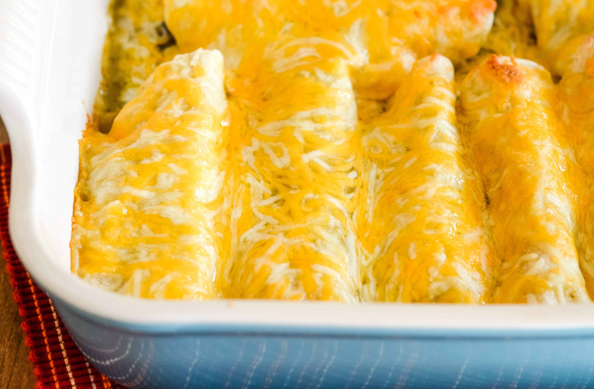

Dad's Enchiladas

Dad's enchiladas will feed a family of 5. They are not too spicy.
You need a lasagna pan
Ingredients
- 2lbs Boneless skinless chicken breast cut into small ~1/2 inch squares
- 1 cup of mayonaise
- 1 cup of sour cream
- 1 can of chopped green peppers
- 1 onion chopped
- 1 pound of shredded Mexican cheese
- 1 package of taco seasoning
- 1 package of large tortillas note corn tortillas are traditional but flour tortillas may also be used
- 1 small can of enchilada sauce
- Put chicken in the lasagna tray and sprinkle it with the taco seasoning, then bake it at 350 for 20 minutes.
- While the chicken is baking put sour cream, mayonaise, onion and peppers in a large bowl and mix.
- After the chicken is done put it in the bowl and mix.
- Take a large spoonfull of the mix and put it in tortillas. Add a little cheese.
- Fold the enchiladas, then put them in the same lasagna pan, side by side to fill the pan.
- Pour enchilada sauce over everything and cover it with cheese
- Bake for 30 more minutes at 350